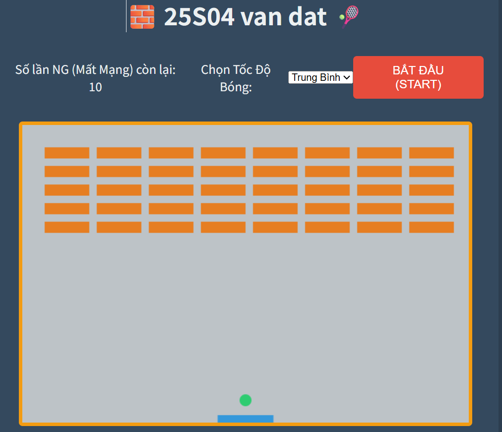

プログラム動作イメージ

プログラム概要とアピールポイント
速度をあそべて矢印であそべる、10回のやり直しで安心して挑戦できる爽快ブロック崩し。
(左右の矢印キー（←/→）を使ってラケットをいどうさせます)。
（目標はボールを打ち返し、すべてのブロックを壊すことです）
（ボールが画面の下に落ちると、1ミスとなります）
(10回ミスになるとゲーム終了となります)
アピールポイント
- 挫折せず遊べる10回のやり直しで安心
- 自分の腕前に合わせられる速度設定で快適
- .画面の説明が常時表示されてまよいわず開始